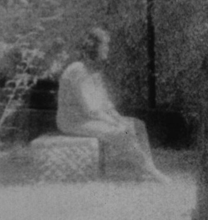
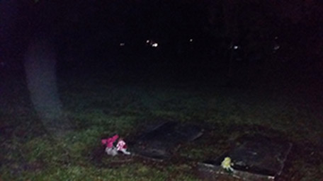
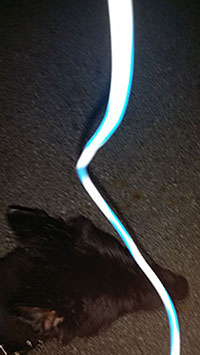

As we humans evolved we expanded our knowledge of our world by seeking answers to our never ending
questioning. Are we alone, what happens when we die? But for every question answered 10 more take its place.
One such question is if there is such a thing as a spirit. The paranormal world is unpredictable.
we know very little about it but know enough to know that there is something there. This concept has made
countless people devote their lives to finding the answer. In this page I will navigate you to a better
understanding of what paranormal investigation is all about.
Professional paranormal investigations are no longer a taboo aspiration in our society. There are numerous
television shows that follow locations where un explained occurrences have occurred. It is a fact that the
evidence to support spirits is overwhelming. Unfortunately scientist do not condone the existence of
such entities because the occurrences of such are unpredictable therefore un measurable. However, That doesn’t
stop people from investigating. I’m one of those people. But there are groups out there that are determined as
well as well funded. Here are a few.
The equipment used in these types of investigation can vary from simple and inexpensive to exotic
and costly. It mostly depends on you level of commitment. For the most parts, four items are used
regularly by paranormal investigators. These tech toys can be found either online or in the store.
It is believed that spirits can sometimes interact with our physical world. Some scientist
believes that spirits is a form of human consciousness and continues to exist because
of quantum mechanics. Whatever the reason, these devices work often when trying to contact them.
EVP Recorder
Ccan pick up frequencies inaudible to humans.
Infrared Camera
It uses infared light to see, and it picks up the full light spectrum.
Spirit Box
Somehow, these beings can use the white noise to come through and talk. after all,
what is white noise but noise from space.
Mel Meter
This device is quite unique. For some reason, there has been sufficient evidence to
support that when a spirit is in close proximity, it affects the electromagnetic
field in the area. This device signals you when that field is desrupted. I’ve tested this
device myself and I can honestly tell you that it works.
Gallery
These photos you see here are some of the most famous ghost apperitions
After a battle in World War II, these men were suprised to see their friend show up
in a unit photo after he had been killed in battle.
This photo was taken in the most haunted cemetary in America.
The next two images are some of the ones I have captured. I promise it won't dissapoint you.
This is the first apperition I caught on camera. It looks like it came out of the grave.

This photograph is what I believe to be my holy grail of paranormal. At first I
thought this is a camera error, but then I took a closer look and discovered something
incredible. If it was a camera fluke, or a bug flying close to the lens, it wouldn’t have
casted a shadow. Take a good look at it. The anomaly is actually casting a shadow on the ground.
And by the size of the shadow you can see clearly that it was away from the camera a good
two feet.
Audio File
This is a very compelling piece of evidence captured by me. If you listen closely, you can hear the
spirit of a man whispering mama. I promise that this is not a prank or some sort of error. I
was completely alone when I got this voice. And if analyzed on a professional audio program like Adobe
Audition, you can clearly see that the frequency of the voce is not in that of the capability of human
hearing

{kind=link}
{kind=link}
{kind=link}